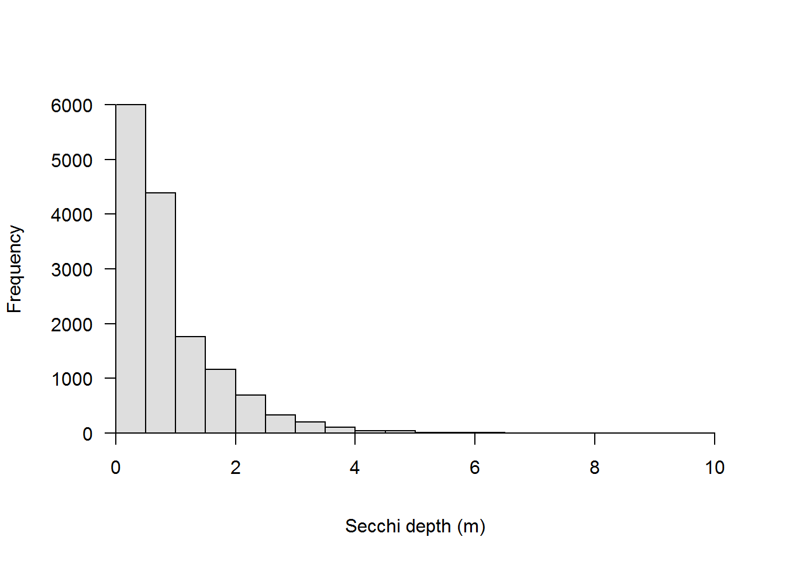

Intermediate R

Introduction
Once we have a basic grasp on how R works, and how and where to find help, the learning process becomes a lot less painful, and we can start to build an appreciation for how convenient it is to have a script we can come back to again and again. To show off this convenience, and the power of R as a statistics program, we will spend the afternoon session walking through some applied analyses and spend a little more time with data visualization tools.
The plan for the afternoon is to introduce a subset of the Secchi Dip-In data to do a standard statistical analysis with individual data points from many lakes, and then switch back to data visualization tools to create some isopleths of physical parameters measured at multiple times and depths over time in a single lake using the Otsego Lake data from the morning session.
Data overview and management
Before we ever get into a statistical analysis, it is always good practice to have a good, long look at the data we are working with to make sure everything makes sense, and to note issues that may rear their heads down the road.
Let’s start by reading in the Secchi Dip-In data. This particular data set is a subset of the whole, and contains only those data that were collected in the state of Ohio.
We read the data in with the argument stringsAsFactors = FALSE because there are a lot of string variables in the data, and factors can add extra handling time to our workflow (see morning session tutorial ).
ohio <- read.csv('ohio.csv', stringsAsFactors = FALSE)So, what are we working with here? Let’s have a look.
Remember from the morning session that it might be useful to understand how R sees your data first and foremost. The most reliable method for doing this with dataframes is to look at the structure of your data using str.
# Like this:
str(ohio)
Now that we have an idea of what the data set looks like, let’s take a little closer look. First, there are a couple of things that we can do that will clean up our code down the road a little bit. Let’s have a quick look at our column names again.
names(ohio)## [1] "Country" "Latitude"
## [3] "Longitude" "Year"
## [5] "Month" "Day"
## [7] "Secchi..m." "NLA.."
## [9] "State" "Water.Body"
## [11] "County..Borough.Parrish." "GNIS.ID"
## [13] "GNIS.Feature.Name" "GNIS.Class"
## [15] "GNIS.County" "GNIS.Latitude"
## [17] "GNIS.Longitude" "GNIS.Elevation..m."Most of these are nice and clean, but there are some things that happen when we read data into R from Excel files. One of the things that R does is to replace all spaces and special characters with periods (.). This can make things a little difficult to read when we write code. For example, the column that said Secchi (m) in our Excel spreadsheet now says Secchi..m.. This confusion is compounded by the fact that some programming languages and R functions rely on the . for special purposes.
We are not going to replace all of the names, because we are not going to work with all of the columns, but let’s replace a couple of these that we are definitely going to use.
For now, let’s change the names for Secchi..m. and for County..Borough.Parrish.. Remember that the result of names(ohio) is a vector, and that we can replace individual elements of that vector. We just need to know the index of the element we wish to replace. In this case, Secchi..m. is the 7th column of the dataframe ohio, and County..Borough.Parrish. is the 11th.
Here is how it works:
# First, we replace Secchi..m. with Secchi
names(ohio)[7] <- "Secchi"
# Next, we replace County..Borough.Parrish.
# with just County because we are working in a
# single state in this case, not becuase we are
# County-centric :)
names(ohio)[11] <- "County"Of course, we could always do this in one fell swoop:
# Replace names of both at once
# because that is cooler than one
# at a time.
names(ohio)[c(7,11)] <- c('Secchi', 'County')Notice that above, we need to put indices inside of a call to c (the concatenate function) because otherwise R tries to interpret these as row and column indices and the program will return an error.
Data exploration
Now that we have had a quick look at our data, and we have made some changes for the sake of convenience, let’s dig a little deeper.
For this afternoon, we are going to use Secchi as our response, or independent variable to demonstrate some basic statistical techniques in R. Before we can do any actual statistics, though, it is good practice to scrutinize the data we intend to use.
To start with, let’s take a quick look at Secchi depth using a histogram.
# Make the histogram
hist(ohio$Secchi,
col='gray87',
yaxt='n', xaxt='n',
xlab='Secchi depth (m)',
main='')
axis(side=1, pos=0)
axis(side=2, las=2, pos=0)
From this plot alone, there are a few things that should be obvious.
First, we can see that the distribution of our response is right-skewed, with many more observations near zero than near the maximum.
Second, perhaps more nuanced, is that there are no values less than zero. For anyone who has spent some time using a Secchi disk, the reason for this is probably obvious. We can’t have negative values for light penetration into the water column[citation needed]. This variable is positive definitive. This is actually common for a lot of parameters we measure in lake management because we frequently are interested in concentrations, depths, areas, and other non-negative quantities.
We will need to think about both of these characteristics as we move into statistical analyses. One of the central assumptions of modern regression tools relates to normality of residuals, which in the absence of heterogenous groups, can initially be approximated using a histogram of the response. To show this, we can plot the residuals:
# Make the histogram, this time
# subtracting the mean from each
# value. Is the result normal?
hist(ohio$Secchi-mean(ohio$Secchi),
col='gray87',
yaxt='n', xaxt='n',
xlab='Error',
main='')
axis(side=1, pos=0)
axis(side=2, las=2, pos=-1)
This looks pretty much the same as the one above, but the x-axis has changed. We should know, at this point that the distribution above is decidedly not normal.
Transformations
We can handle both of these problems by log-transforming our data like this:
ohio$logSecchi <- log(ohio$Secchi)We can plot histogram of the residuals again to see what it did:
# Make the histogram,
# subtracting the mean from each
# value. Is the result normal?
hist(ohio$logSecchi-mean(ohio$logSecchi),
col='gray87',
yaxt='n', xaxt='n',
xlab='Error',
main='')
axis(side=1, pos=0)
axis(side=2, las=2, pos=-3.5)
Clear to see here that our residuals look much more like a normal distribution now.
What has this done to our data, though? Let’s have a look:
# Make the histogram.
hist(ohio$logSecchi-mean(ohio$logSecchi),
col='gray87',
yaxt='n', xaxt='n',
xlab='Error',
main='')
axis(side=1, pos=0)
axis(side=2, las=2, pos=-3.5)
As you can see, our response variable is no longer constrained to be greater than zero on the log scale, so we don’t have to worry about how that influences normality in our residuals anymore, and we won’t get negative predictions from any of the statistical models that we make.
Now we can move forward with some statistics!
Introductory statistics in R
Let’s start with the simple case of comparing Secchi between lakes and reservoirs. If you have a basic understanding of statistics, you might immediately realize that this is a comparison of a continuous variable between two groups. We have a couple of paths forward here. We could either set aside distributional assumpstions and use non-parametric methods, or we could assume some distribution for our error structure and proceed using parametric or semi-parametric statistics.
In either case, we are going to have to make sure we only have data for lakes and reservoirs first. (If you looked closely at the data you will have realized that there are also records for Dam in our dataset.)
To get rid of the observations related to Dam for now, let’s just drop that level from our GNIS.Class variable in the ohio data set.
ohioT <- ohio[ohio$GNIS.Class=="Lake" | ohio$GNIS.Class=="Reservoir", ]Wilcoxon rank-sums test
Let’s start by
Copyright © 2018 Dan Stich. All rights reserved.